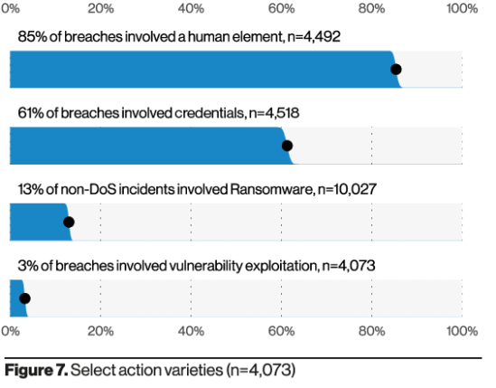

Technology Opportunities
The lack of regulation surrounding the current Cyberspace gives us various opportunities to structure it to create a more monitored space. According to a report by FireEye, Data theft in intrusions comprises 29% of all cyberattacks, with 9% of all attacks focused on espionage. This has put governments from around the world on high alert to safeguard their and the citizen's information. To counter these, governments have begun implementing regulations and guidances around legislative measures. While its ethics can be argued, indicting individual actors has a significant benefit to countries. It allows nations to call said attacks "criminal offences" and helps de-escalate situations. It also allows the country's legal systems to assign a root cause, ending an open-ended case.
According to Ronald M. Baeckers book, Computers, and Society: Modern Perspectives, selling cyberespionage and cyberwarfare tolls has become an economically profitable sector. Companies market themselves as selling ethical malware but claim that they do not sell software to customers who commit human-right atrocities. However, as noted in Baecker's book, many of its customers come from oppressive regimes and military governments, such as Uzbekistan, Morocco, Saudi Arabia, including the US FBI and DEA. Not only is this causing tensions to rise among nation-states, but both private individuals and companies are beginning to express concerns around how these nation-states are weaponising themselves.
An opportunity to counter cyberattacks related to cyber warfare is to develop new cybersecurity policies which are backed by regulations constructed to monitor Cyberspace. The Budapest Convention is a global agreement against cybercrime. It is a framework used as a guideline for countries to generate comprehensive legislation against cybercrime. Similarly, suppose countries were to sign mutually agreed legislation that had strict regulations around Cyberwarfare. In that case, it could potentially lessen the amount of Cyber Espionage due to there being the same repercussions across all nations.
Another option is to focus on those who have conducted the crime by developing a three-level order of consequences, as suggested by Nicholas Tsagourias. These would act as a set in a stone rulebook on how we can attribute these said cases. For example, the first level would likely only be attributed to an individual as it might solely deal with data collection. The third level would deal with the most consequences and attribution to a nation-level that might have caused economic mayhem or, perhaps, death. However, the effects of cyber-crime can have ongoing down trickling effects. Damage to a stock exchange network could cause an economic crisis leading to decades of human welfare loss, unlike a physical attack whose damage would be more immediate.
The last opportunity to counter Cyberattacks is educating the public and workforce about Cyberattacks and how they can create their Cyberspace more secure through awareness campaigns. This will alert the public about the risks of being in Cyberspace, making people more cautious about how they are handling their data online. According to Verisons 2021 Data Breach investigation report, organisations that do not implement strong verification methods were a notable percentage of victims. The article notes that the most effective methods in deterring this would be through a combination of implementing Multi-factor authentication and a VPN. They also show that 85% of all cyber attacks involved a human element. By educating companies and people to begin including multi-factored verification into their lives, we might see a decrease in attacks.

Verison. (2021). Figure 7. Select action varieties (n=4,073) [Figure].
verison.com/dbir/
by Tony Clear.
thanks to W3C for tutorial and adapted code from Style Examples
also thanks to WDN for HTML and CSS resources and any adapted code snippets from Mozilla Developer Network